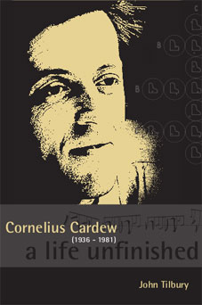

Wednesday, May the 4th, 2011
back to: title, date or indexes
On the bus : I have to write to distract me from the woman, the warm pressure of the femme de trente ans, her softest arm. Boulez—rescue—your programme note must curb my corpuscular eruptions.
Cornelius Cardew, aged twenty-two, in his journal, quoted in Cornelius Cardew : A Life Unfinished by John Tilbury (2008). I have just begun reading this book, which—at over a thousand pages—is clearly both a Herculean labour of love (thirty years in the writing) and mildly bonkers. In other words, the best kind of biography. Expect further reports as I wade through it.
